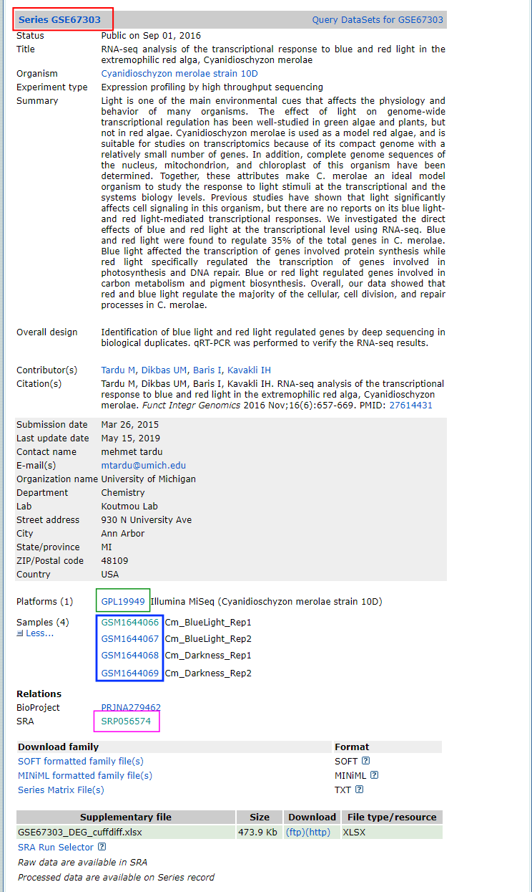
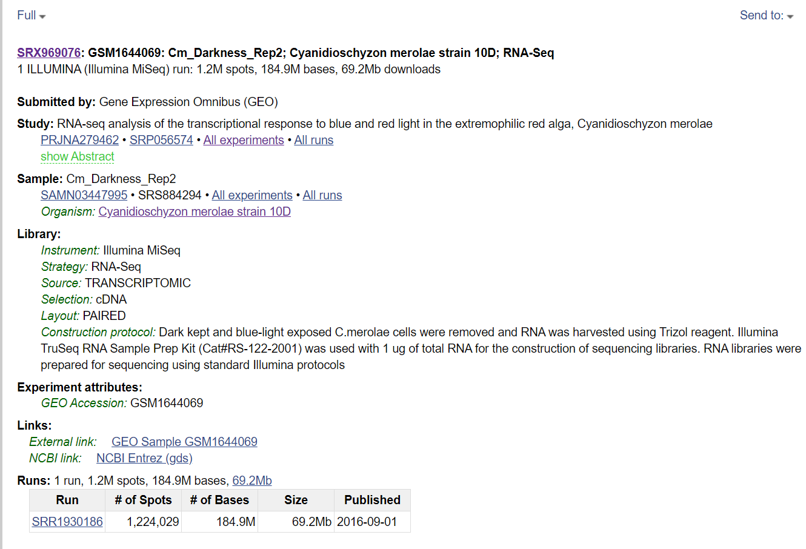

Download from online databases, open coding session
Slides
Today’s slides
Download from GEO and SRA
There is a multitude of online databases for OMICS data of all types (we are trying to put together an useful list of databases here). Some of those databases provide direct links to the data to download (either raw data or analysis results), some others havea more complex way of downloading data (through a software or some more complex way of finding the download link). A database people often find problematic is GEO (Gene Expression Omnibus), which includes processed and raw data, usally for short read datasets.
GEO and SRA data
GEO (Gene Expression Omnibus) is a database which contains processed data from biological experiments. For example aligned files and analysis results, and supplementary files of various type. A GEO entry is called Series and contains Samples , Platforms, Supplementary data. Usually, there is an associate SRA number.
A SRA (Sequence Read Archive) number contains the raw data for the samples contained in a GEO series. The download from GEO can happen by using the various alphanumerical identifiers to write a download link. SRA downloads need the software SRA-tools, and cannot be performed using a simple download link.

Download GEO data programmatically
Sometimes you need to download some supplementary files from GEO. This is pretty easy from the command line, and we show it with an example. We consider the GEO series in the figure above - go to the GEO home page and find it using the series number in the search bar of the website.
Now, we use the guidelines of GEO for programmatic downloads. Here you have examples and descriptions on how to write the FTP1 address of all files in the series (excluding SRA files).
To look at the content of the series, use the command line and write
curl -l ftp://ftp.ncbi.nlm.nih.gov/geo/series/GSE67nnn/GSE67303/note how the address contains series, the series ID where the last three numbers are changed into nnn, and the series number itself. The output is a list of the content of the series:
matrix
miniml
soft
supplThe first three are folders containing matrix, miniml and soft files, which are plain text files used to describe the series. The fourth is the folder of supplementary material. Using curl -l we can see that it contains the supplementary file of the series:
curl -l ftp://ftp.ncbi.nlm.nih.gov/geo/series/GSE67nnn/GSE67303/supplGSE67303_DEG_cuffdiff.xlsxNow we can download the file using the whole URL with wget
wget ftp://ftp.ncbi.nlm.nih.gov/geo/series/GSE67nnn/GSE67303/suppl/GSE67303_DEG_cuffdiff.xlsxDo you want to download a lot of supplementary files without one-by-one download by hand? Then wget -r will download recursively the content of the whole folder, for example:
wget -r ftp://ftp.ncbi.nlm.nih.gov/geo/series/GSE67nnn/GSE67303/suppl/Some webpages have so-called robots which avoid a user to download in an autopmated way too many datasets at once, to prevent overloading of the bandwidth. Bulk downloads are identified by, amongst others, how much time it takes to request a download. When a robot rejects your download attempt, you get an error message. In that case, wget can solve the problems with some extra dedicated options. Below you can see a bulk download from the PRIDE database, which uses robots:
wget --random-wait \
-r -p -e robots=off \
-U mozilla \
ftp.pride.ebi.ac.uk/pride/data/archive/2024/09/PXD056312/Note: the command above takes time because the data is quite big and is just for the sake of example, so don’t run it :-)
You can change the URL to show the supplementary data inside samples and inside platforms. In our example you can click on the platform/sample number on the webpage, and see if they contain any supplementary data. It is not the case of this GEO series, but for the sake of the example we will write down how to list the supplementary files inside the related FTP folders.
For the platforms, we need to substute
serieswithplatforms, and the same with the IDs, which will again havennnfor the last 3 digits:curl -l ftp://ftp.ncbi.nlm.nih.gov/geo/platforms/GPL19nnn/GPL19949/you will notice there are onlysoftandminimlfolders for the platform description, and no supplementaryFor the samples, it works analogously, using sample IDs
curl -l ftp://ftp.ncbi.nlm.nih.gov/geo/samples/GSM1644nnn/GSM1644066/you will notice there are onlysoftandminimlfolders for the platform description
Download GEO and SRA data with geofetch
Downloading entire GEO series and related raw data through SRA is always painful. Here comes into play a pretty useful package called geofetch (Khoroshevskyi et al. (2023)). This can be easily installed through conda on the command line
conda create -n geofetch
conda activate geofetch
conda install -c bioconda -c conda-forge geofetch sra-toolsYou can also find a guide to anaconda in our ABC2 tutorial, where the packages geofetch and sra-tools can be installed interactively. geofetch works also with windows, though some options are not available.
sra-tools creates very large files in .sra format into your home folder while downloading. This can be detrimental on a cluster, for example on GenomeDK, where your home is limited in 100GB size. sra files are then converted into the desired format. You can decide to download sra files in to a temporary folder or any other folder of your choice. For example you can do what follows to change the folder for sra files into /tmp
mkdir -p ${HOME}/.ncbi
echo '/repository/user/main/public/root = "/tmp"' > ${HOME}/.ncbi/user-settings.mkfgDownload
geofetch makes it easy to download data - the command is very basic and different options can personalize which content you want to download. The whole download contain also metadata which follows the PEP format, a FAIR-ready way of documenting data for reproducible access by other users (Sheffield et al. (2021), LeRoy et al. (2024)). The basic command has this form:
geofetch -i SRA_SERIES_IDand one can add other arguments to choose the type of data to be downloaded according to this table:
We can download metadata and raw sra data for the GEO series we have in the first figure of this tutorial with the basic geofetch command
geofetch -i GSE67303Once you are done, you have the following files and folders:
GSE67303GSE67303
├── GSE67303_GSE.soft
├── GSE67303_GSM.soft
├── GSE67303_PEP
│ ├── GSE67303_PEP_raw.csv
│ └── GSE67303_PEP.yaml
├── GSE67303_SRA.csvGSE67303_GSE.softis a text file containing series informationGSE67303_GSM.softis a text file containing samples informationGSE67303_SRA.csvis a comma-separated table with thesrafile lists who was downloaded- the files in the subfolder
GSE67303_PEPcontains data info followingPEPstandard
Try to do ls in the folder used as default for the download of sra data, such as
ls /tmp/sra/and you should see the downloaded data from the sra archive
SRR1930183.sra SRR1930184.sra SRR1930185.sra SRR1930186.sraNow you can use fasterq-dump to convert the sra data into fastq format. fasterq-dump builds up on the tool fastq-dump, but includes some default settings, such as splitting the fastq files into paired reads and ambiguous reads (only when you actually have paired reads), which is usually the standard.
In this example we choose the locally downloaded files in the sra download folder, and we choose the output folder inside where we have the metadata information.
fasterq-dump /tmp/sra/*.sra -O GSE67303/raw -vNow you can see the raw data is also there
ls /tmp/sra/GSE67303
├── GSE67303_GSE.soft
├── GSE67303_GSM.soft
├── GSE67303_PEP
│ ├── GSE67303_PEP_raw.csv
│ └── GSE67303_PEP.yaml
├── GSE67303_SRA.csv
└── raw
├── SRR1930183_1.fastq
├── SRR1930183_2.fastq
├── SRR1930184_1.fastq
├── SRR1930184_2.fastq
├── SRR1930185_1.fastq
├── SRR1930185_2.fastq
├── SRR1930186_1.fastq
└── SRR1930186_2.fastqIf you want, you can empty the sra download folder
rm /tmp/sra/*.sraDownload SRA data with fasterq-dump
You can also use fasterq-dump directly if you do not want any metadata. It can be used with only one sra run at the time, but below we show how you can download entire series runs or sample runs.
Only one SRA run
Do you simply need a single raw file? In the webpage of the GEO series, click on the SRA code. A new window will show all the samples: choose one and find the SRA run number, which starts with SRR (in figure below).

In relation to figure above
fasterq-dump SRR1930186 -vAll SRA runs of a GEO series
Click on the SRA link inside the GEO series. When the list with all samples appears, click on Send to on the top-right button, choose File and Accession List. This will download a csv file which you can combine with fasterq-dump to download all runs:
fasterq-dump `sed 1,1d ./Downloads/SraAccList.csv` -vAll SRA runs of a single sample
After clicking on the SRA code of the GEO series, you can click on a specific sample and use the same method with the Send to button to download all the runs of a specific sample.
Extra references for fastq-dump and fasterq-dump
Below some references with all the options for getting sra raw data (credit Ronan Harrington)
fastq-dump command
fastq-dump is a tool for downloading sequencing reads from NCBI’s Sequence Read Archive (SRA). These sequence reads will be downloaded as FASTQ files. How these FASTQ files are formatted depends on the fastq-dump options used.
Downloading reads from the SRA using fastq-dump
In this example, we want to download FASTQ reads for a mate-pair library.
fastq-dump --gzip --skip-technical --readids --read-filter pass --dumpbase --split-3 --clip --outdir path/to/reads/ SRR_IDIn this command…
--gzip: Compress output using gzip. Gzip archived reads can be read directly bybowtie2.--skip-technical: Dump only biological reads, skip the technical reads.--readidsor-I: Append read ID after spot ID as ‘accession.spot.readid’. With this flag, one sequence gets appended the ID.1and the other.2. Without this option, pair-ended reads will have identical IDs.--read-filter pass: Only returns reads that pass filtering (withoutNs).--dumpbaseor-B: Formats sequence using base space (default for other than SOLiD). Included to avoid colourspace (in which pairs of bases are represented by numbers).--split-3separates the reads into left and right ends. If there is a left end without a matching right end, or a right end without a matching left end, they will be put in a single file.--clipor-W: Some of the sequences in the SRA contain tags that need to be removed. This will remove those sequences.--outdiror-O: (Optional) Output directory, default is current working directory.SRR_ID: This is is the ID of the run from SRA to be downloaded. This ID begins with “SRR” and is followed by around seven digits (e.g.SRA1234567).
Other options that can be used instead of --split-3:
--split-filessplits the FASTQ reads into two files: one file for mate 1s (...1), and another for mate 2s (..._2). This option will not mateless pairs into a third file.--split-spotsplits the FASTQ reads into two (mate 1s and mate 2s) within one file.--split-spotgives you an 8-line fastq format where forward precedes reverse (see https://www.biostars.org/p/178586/#258378).
fasterq-dump command
fasterq-dump is a tool for downloading sequencing reads from NCBI’s Sequence Read Archive (SRA). These sequence reads will be downloaded as fastq files. fasterq-dump is a newer, streamlined alternative to fastq-dump; both of these programs are a part of sra-tools.
fasterq-dump vs fastq-dump
Here are a few of the differences between fastq-dump and fasterq-dump:
- In
fastq-dump, the flag--split-3is required to separate paired reads into left and right ends. This is the default setting infasterq-dump. - The
fastq-dumpflag--skip-technicalis no longer required to skip technical reads infasterq-dump. Instead, the flag--include-technicalis required to include technical reads when usingfasterq-dump. - There is no
--gzipor--bzip2flag infasterq-dumpto download compressed reads withfasterq-dump. However, FASTQ files downloaded usingfasterq-dumpcan still be subsequently compressed.
The following commands are equivalent, but will be executed faster using fasterq-dump:
fastq-dump SRR_ID --split-3 --skip-technical
fasterq-dump SRR_IDDownloading reads from the SRA using fasterq-dump
In this example, we want to download FASTQ reads for a mate-pair library.
fastq-dump --threads n --progress SRR_IDIn this command…
--threadsspecifies the number (n) processors/threads to be used.--progressis an optional argument that displays a progress bar when the reads are being downloaded.SRR_IDis the ID of the run from the SRA to be downloaded. This ID begins with “SRR” and is followed by around seven digits (e.g.SRR1234567).